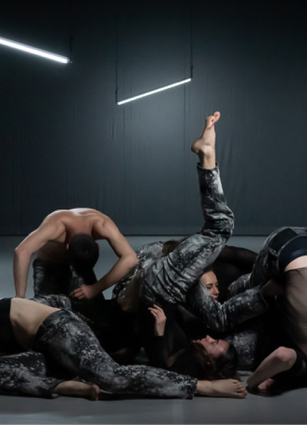
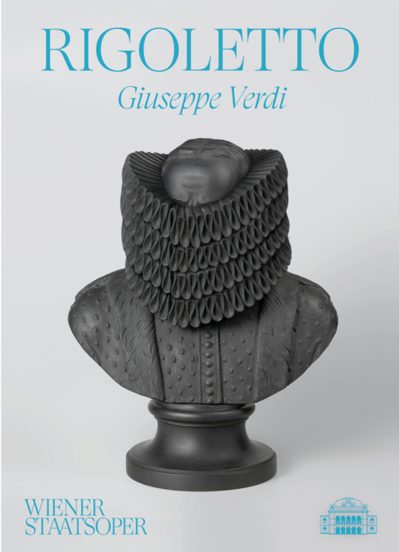
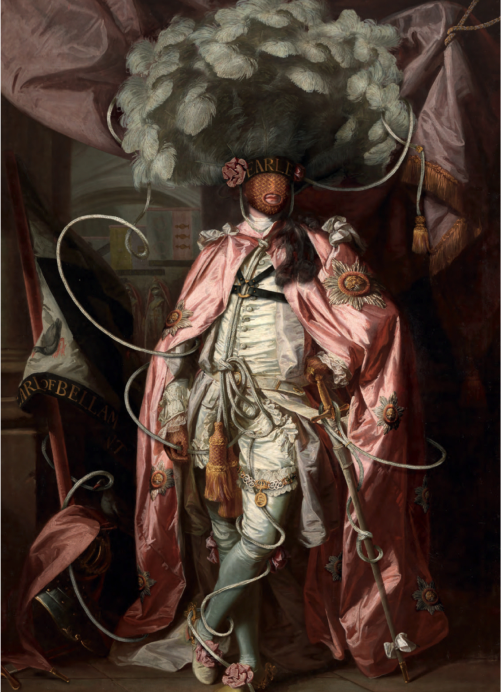
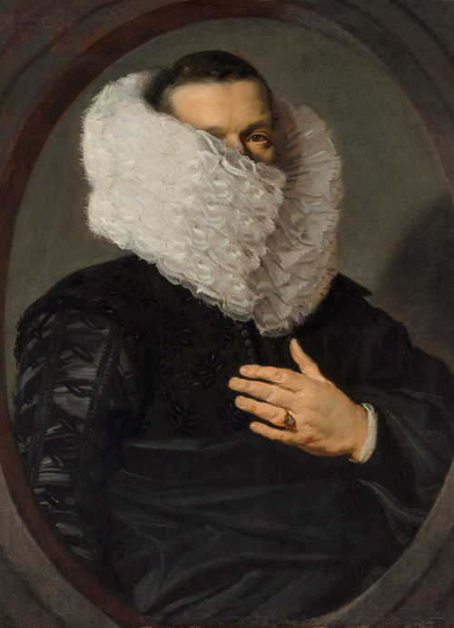

news
-
The new york review of books
Hidden Jacometto graces the cover of the October, 2022 issue New York Review of Books.
-
Volker Hermes’ Hidden Portraits: a new voice in an old world
A recorded online seminar delivered by the Association for Art History as part of the Art History Festival. In a conversation with Douglas Dodds, former Senior Curator of Digital at the V&A, Volker Hermes will share more about his work and how he uses the digital format as a means of contemporary contextualization of historical artworks.
-
Animalis Poyledae Featured in “Kind of Cthulhu” exhibit
Makers Place currator Jarid Scott to feature Animalis Poyledae XV in his “Kind of Cthulhu” exhibit beginning September 19th.
-


IN THE HEART OF THE HEART OF THE MOMENT – embodied by 9 / An ode to our times
A dance collaboration with choreographer Alexandra Waierstall
-


states opera of vienna: rigoletto
The States Opera of Vienna is using a Hidden Portrait (Hidden Wedgewood-Bentley) for the evening program booklet of the current production of Rigoletto.
-


suited, booted, convoluted
A collaboration with Hamish Bowles, the Victoria & Albert Museum, and the National Gallery of Scottland. (April 2022 edition of The World of Interiors)
-


Volker Hermes launches hidden portraits as an NFT Colleciton
Collectors can now purchase pieces in the Hidden Portraits collection exclusively as NFT’s.